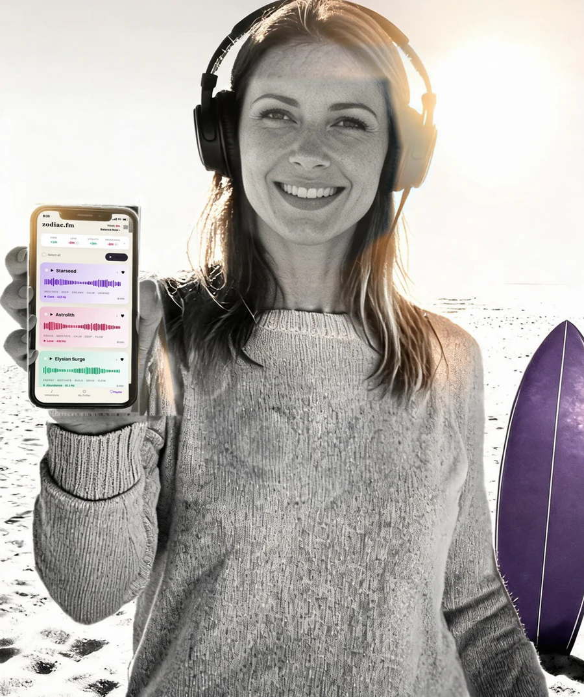
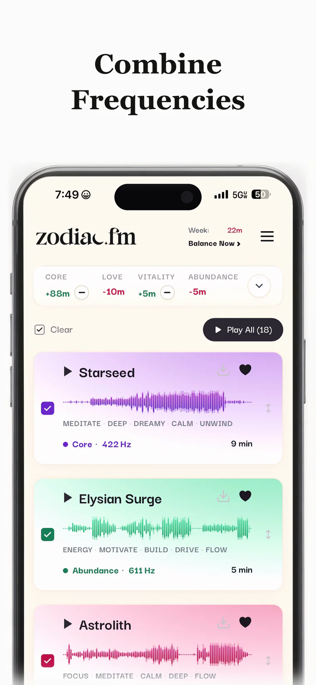
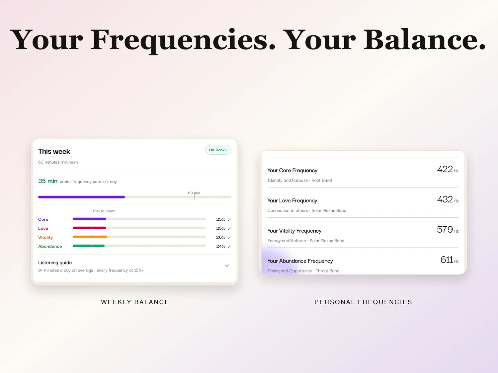
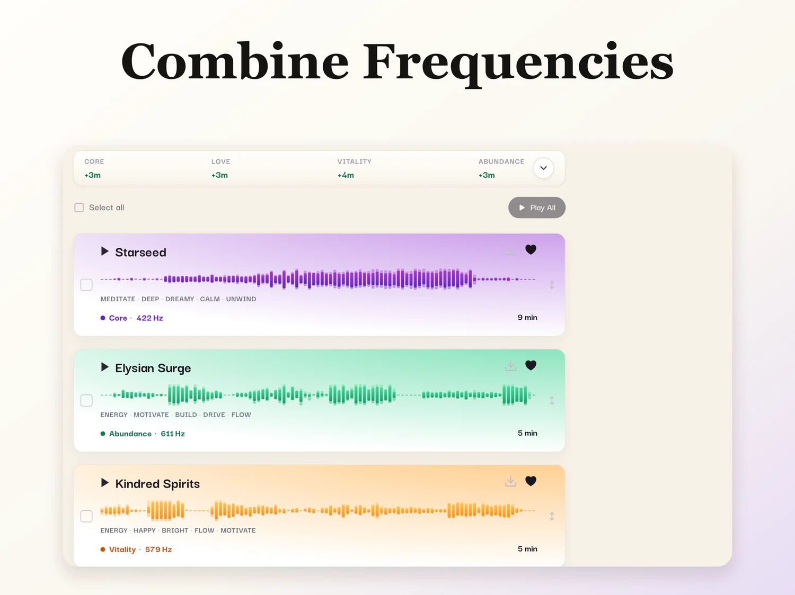
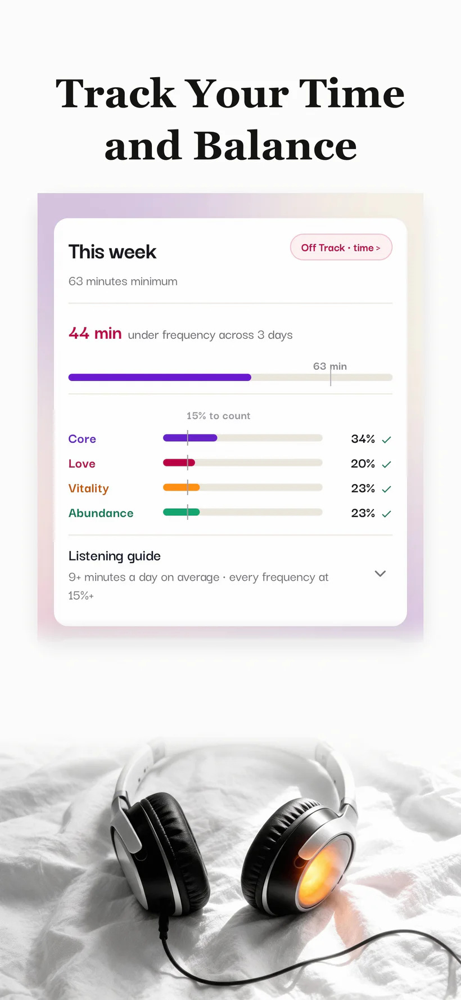
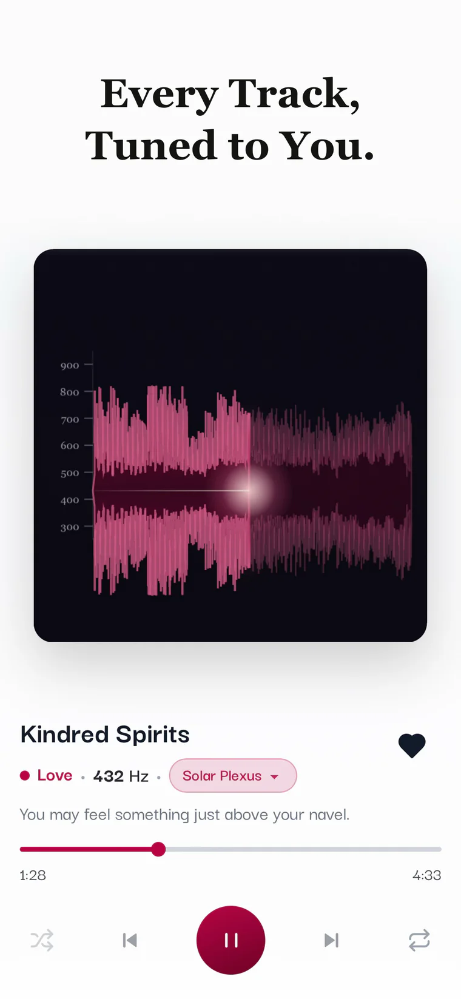

Discover your four frequencies
Answer our questions. ZodiacFM's proprietary algorithm identifies four fixed Orientation Frequencies unique to you.
ZodiacFM for iPhone and iPad
ZodiacFM identifies the four personalized frequencies that provide access to your deepest self.
These frequencies are then embedded into music composed by real musicians, never AI. Over time, listeners often describe the experience as “coming home.” And that is just the beginning.
Press play, put the screen away, and hear the Sound of You wherever you go.

Available for iPhone and iPad.
“Zodiac.fm helps people access aspects of themselves that have always been there. Thus creating profound levels of self-awareness and coherence.”Srini Pillay, M.D.Harvard-trained psychiatrist and brain-imaging researcher
listening sessions and counting.
A standard frequency track plays the same fixed frequency for every listener. ZodiacFM starts with yours.
Answer our questions. ZodiacFM's proprietary algorithm identifies four fixed Orientation Frequencies unique to you.
Every track in your ZodiacFM library is tuned to one of your frequencies. Pick by sound, length, mood, or the part of life you want to spend time with.
Listen to one frequency or combine all four in a single playlist. There is nothing to study and no separate practice to master.

Identity and purpose. The part of you that knows who you are and what is yours to do.
Connection and fit. How you recognize closeness that lets you remain yourself.
Energy. What gives something back and what keeps taking.
Opportunity and timing. What is worth moving toward and what can wait.
Each track carries one frequency. Listen across all four to build a balanced practice.


Save the tracks you love. Combine frequencies. Reorder your queue. Download music for offline listening. Keep it playing in the background and control it from your Lock Screen.
ZodiacFM works like a music app because the music is the practice.

Listen while you work, walk the dog, drive, meditate, or fall asleep. The app does not have to become the activity. Put the music on and get on with your life.
Some people notice something quickly. Others recognize the difference in ordinary moments weeks later. The practice builds through repeated listening.
ZodiacFM shows how much time you have spent with each frequency during the week, so you can see what has been heard and what has been missed.
No streaks to protect. No score to perform. Just a clear view of your listening.
In our internal 52-week listening study, 300 people started and 278 completed. Of those who completed, 98.6 percent said they would recommend ZodiacFM.
weeks of listening
people started
people completed
of completers said they would recommend ZodiacFM
Among people who listened as designed, averaging at least 9 minutes a day with all four frequencies in balance, 84 percent called the experience life-changing.
The study was conducted internally. It was not a clinical trial. Participants answered open-ended questions every two weeks, and we compared their responses with their actual listening behavior.
“I'm more zoned into whatever practice I'm doing. I can hear me more. And I've never heard this me before.”Zehra AsharyKundalini Practitioner, London
“Listening to my frequency immersion feels like coming home to myself. It's the part of my day where I slow down, tune in, and let everything else fall away. … It's the reset that helps me become the version of me I want to bring to the world.”Katie WellsFounder of Wellness Mama and best-selling author

Your frequencies already belong to you. ZodiacFM plays them back through music, making your own signal easier to hear.
Download ZodiacFM for iPhone and iPad